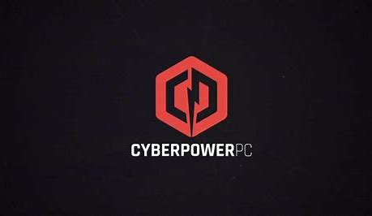

 CyberPowerPC — Summer 2025
CyberPowerPC is one of the largest custom gaming PC manufacturers in the United States.
They build high‑performance desktops, gaming laptops, and esports‑ready systems.
During my internship, I gained hands‑on experience with PC hardware, troubleshooting,
system assembly, customer support, and understanding how high‑performance gaming rigs
are built from the ground up.
Total Wireless — August 2025 to Present
Total Wireless is a nationwide prepaid wireless provider offering affordable phone plans
and devices. Working here strengthened my communication skills, taught me how to explain
technical information clearly, and gave me experience with device setup, troubleshooting,
and customer support.